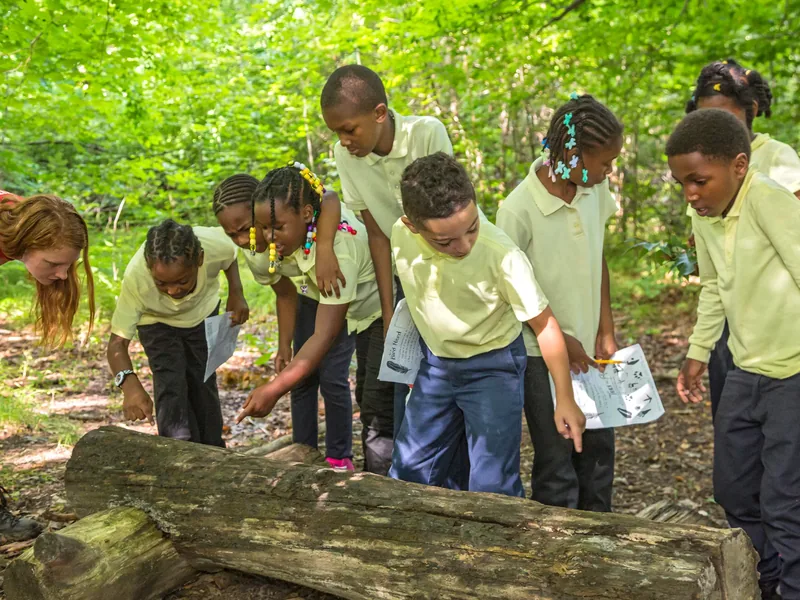
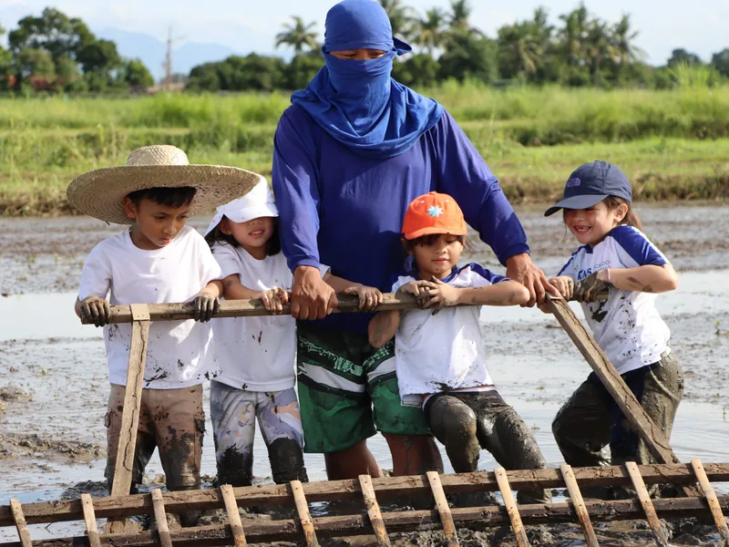
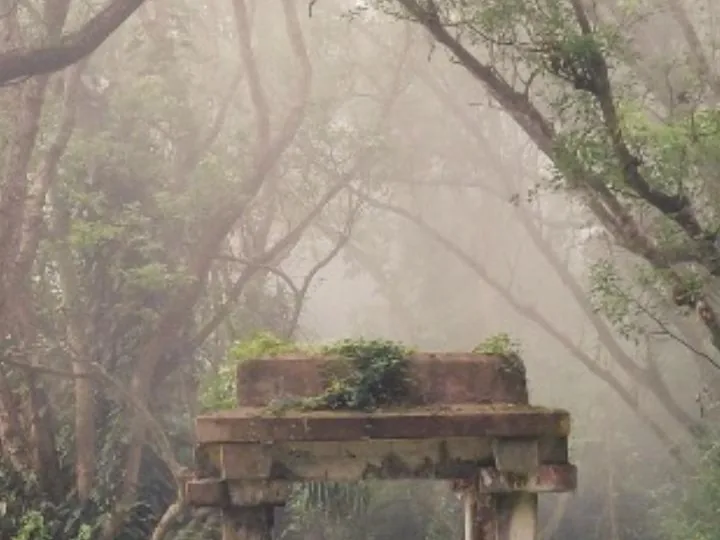
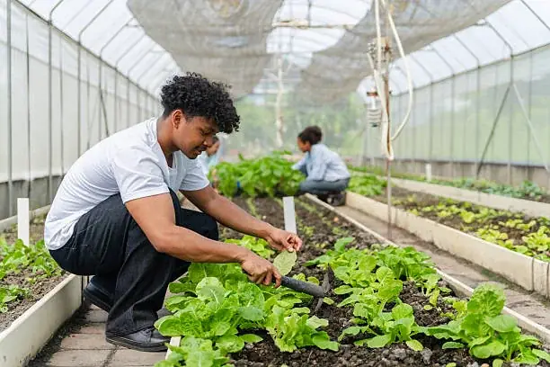
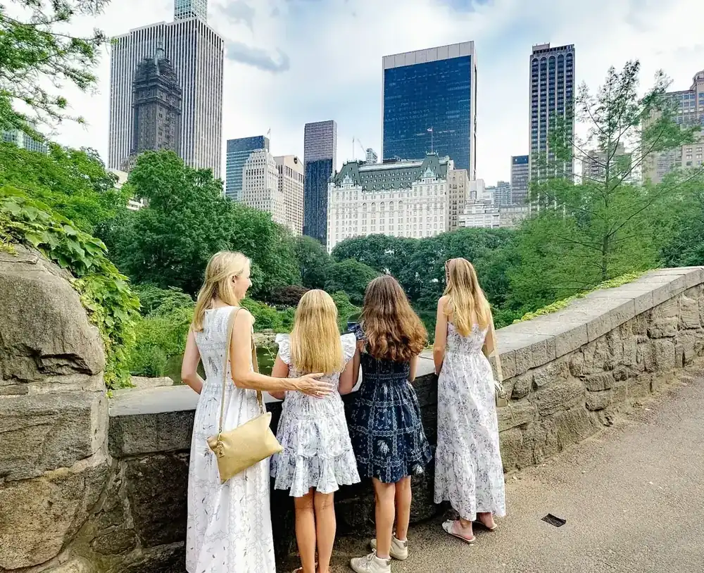
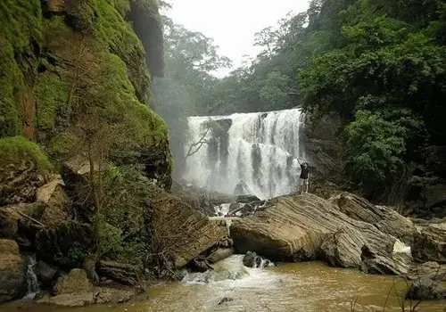
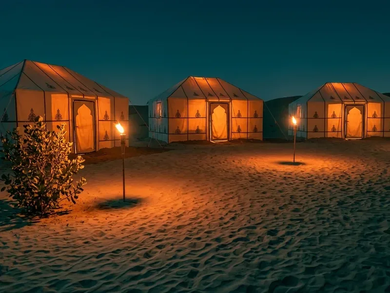
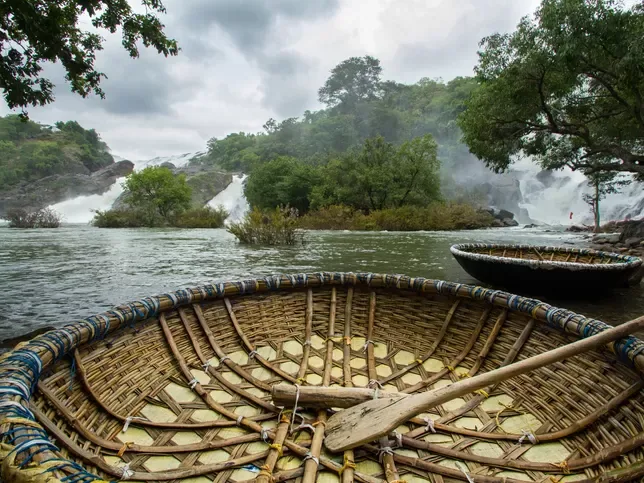

Project study tours
The deliverable is agreed first. Every visit, interview and free afternoon then has to earn its place by moving the group closer to it.
Best forCoursework, extended essays, field reportsSee the programme →


Educational tours built around what the class is studying, run to a written safety protocol, and costed to your group rather than to a brochure.
Destinationz 360 plans and operates educational travel for schools: day trips, residential camps, field work, expeditions and international tours. Every programme starts with what the class is studying and ends with a written record of how the group was looked after.
We are a Stuti Tourism brand, alongside Zubilant. The group has been designing travel since 2009 and has served more than 800,000 travellers. Schools get the same operating discipline, with the paperwork, the ratios and the contingencies that a school trip actually requires.
No prices are published on this site. A school group is costed against its own headcount, dates and inclusions, and a brochure rate would only be a number we later have to walk back.
Three of these appear on every tour operator’s website. The fourth is the one that decides whether the other three are true.
Grouped by what they teach and how they run. Every one is rebuilt around your syllabus, your year group and your dates.

Naturalist-led days inside a working reserve, with the field method, the buffer villages and the conflict included rather than edited out.
Best for: Biology, environmental science, geographySee the programme →
Built backwards from one question the group is going to answer, with the kit, the permissions and the people arranged so they can actually answer it.
Best for: Environmental science, geography, IB ESSSee the programme →Planned around one stated objective, on a site we have walked ourselves, with the timings, the toilets and the wet weather already handled.
Best for: Any subject, any year groupSee the programme →
Starts with the paperwork rather than the destination, because the paperwork decides whether the destination is possible.
Best for: Classes 8 to 12, IB and international curriculaSee the programme →The deliverable is agreed first. Every visit, interview and free afternoon then has to earn its place by moving the group closer to it.

Learning outcomes mapped to the days before the trip is booked, and service that a host organisation actually asked for.
A vernacular settlement and a rated modern building, compared on the same criteria, with the readings taken by the students.

The value is access. Written confirmation, the right shift, the safety induction booked, and someone senior enough to answer a good question.

For the year group that is not travelling this term. Your hall, your timetable, the equipment brought in.

The trip most often planned in a hurry, run to the same written protocol as a week away. Counts at every transition.

Graded to the slowest walker, with acclimatisation days that stay in the plan and an evacuation route written for every night.

The night protocol matters more than the activity list. Tent allocation, adult positions, curfew and the count after lights out, all decided before departure.

One coordinator travels with the group and holds the plan, the counts and the contingencies. Teachers get to teach, and to sleep.
A school tour is a high-trust purchase made by a person who is personally accountable if a child is hurt. So the protocol is published, in full, rather than described as “experienced staff”.
Destinationz 360 runs educational travel for institutions. Private and family travel, honeymoons, pilgrimages and corporate offsites are our sister brand’s work, same company, same people, same operating relationships since 2009.
Most of the teachers we travel with end up planning something for themselves too. This is where that goes.
Less ticking off places. More experiences you’ll remember. Designed journeys across India and abroad, private and to your dates.
Visit zubilant.co.in →The same sequence whether it is a day out for one class or three weeks abroad for a year group.
One sentence about what the class is meant to understand, the year group, and a rough window. Budget is the fourth question, not the first.
Route, nights, drive times, room splits, dietary counts, the supervision ratio and the wet-weather alternative. On one document the school can circulate.
Consent, medical declarations, insurance and the contingency plan settled in writing before a single deposit moves.
First pick-up to last drop, holding the counts, the documents and the changes. The school gets one number, including at two in the morning.
Two minutes to send. A coordinator calls the school back. Nothing is costed until we know the headcount, the dates and what the trip has to achieve.
Also on WhatsApp.